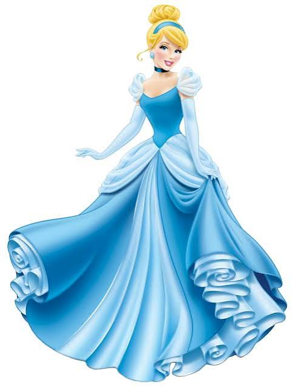
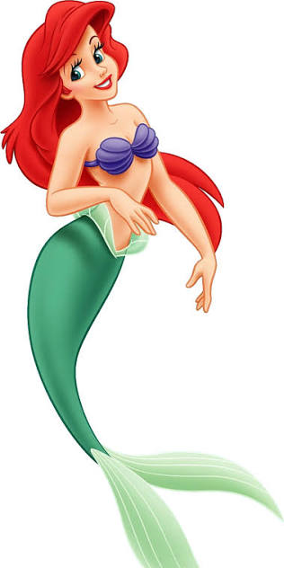
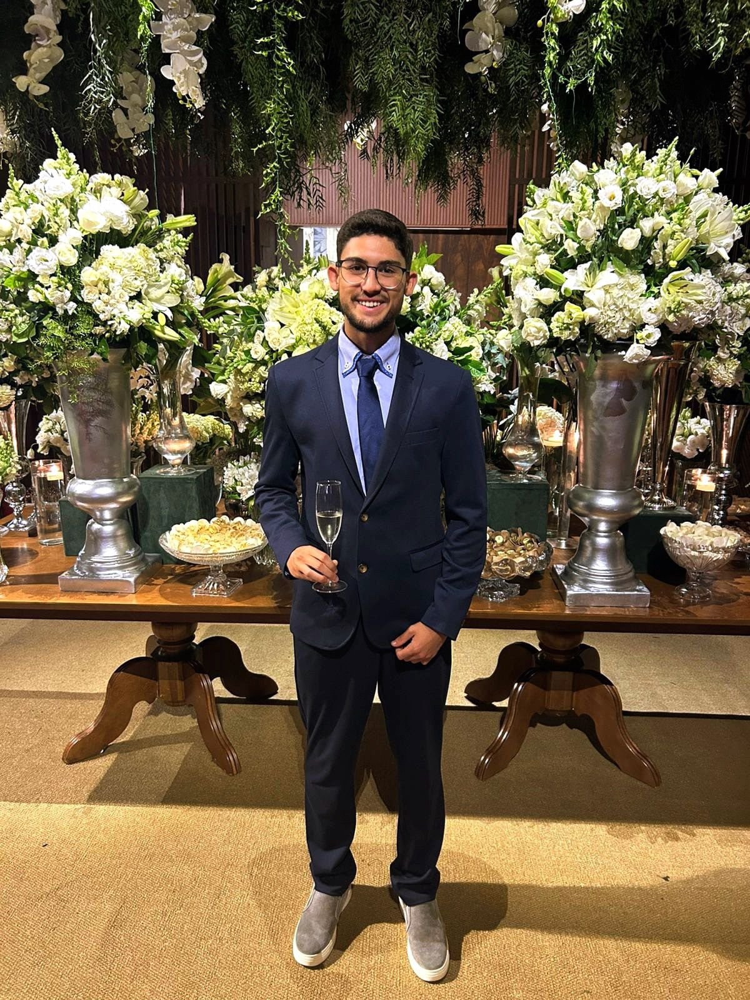

👑 Princesas Favoritas
Rapunzel
Corajosa, criativa e determinada.

Bela
Apaixonada por livros e conhecimento.

Cinderela
Exemplo de bondade e perseverança.

Ariel
Curiosa e aventureira.

👑 Estudante de Ciência da Computação • Desenvolvedor em formação • Tecnologia com um toque de magia ✨
Meu nome é Lucas Siba de Lima e sou estudante do primeiro período de Ciência da Computação na PUCPR. Sempre gostei de tecnologia e de entender como softwares e sistemas funcionam.
Atualmente estou aprendendo programação, desenvolvimento web, inteligência artificial e lógica computacional. Meu objetivo é construir soluções úteis e continuar evoluindo profissionalmente na área da tecnologia.
Corajosa, criativa e determinada.
Apaixonada por livros e conhecimento.

Exemplo de bondade e perseverança.

Curiosa e aventureira.
Treino regularmente buscando saúde e evolução física.
Gosto de aprender novas tecnologias e desenvolver projetos.
Gosto de jogar futebol e acompanhar campeonatos e grandes partidas.
A fé faz parte da minha vida e dos meus valores.
Valorizo muito os momentos com minha família.
Gosto de passar tempo com amigos e criar boas lembranças.
Acompanho novidades e conteúdos do mundo automotivo.
Jogos são uma das minhas principais formas de entretenimento.
| Disciplina | Por que gosto? |
|---|---|
| Experiência Criativa | Permite criar projetos práticos e desenvolver criatividade. |
| Raciocínio Algorítmico | Ajuda a desenvolver lógica e pensamento computacional. |
| Fundamentos de Sistemas Ciberfísicos | Mostra a integração entre hardware e software. |

Jogo desenvolvido utilizando a plataforma Construct durante a disciplina. O projeto envolveu mecânicas de movimentação, desafios e interação com o jogador.
Jogar Agora
Aplicativo multimídia desenvolvido em Processing com foco em educação ambiental, oferecendo uma experiência visual e interativa sobre as principais bacias hidrográficas do Paraná.
Ver Projeto
Jogo desenvolvido em Python utilizando matrizes, lógica de programação e interação entre jogador e computador.
Ver Código
Implementação do clássico jogo Jokenpô desenvolvido em Python, utilizando estruturas condicionais e números aleatórios.
Ver Código